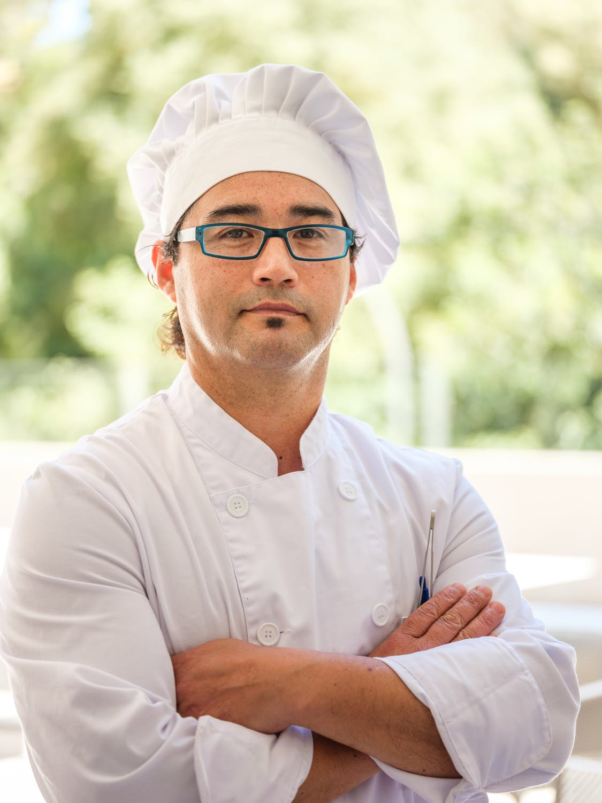

Sona Patel
Born in India, Sona has been introduced to Ayurveda and vegan cooking at a young age. She has been cooking at a young age with her parents and family as an inspiration.

Oliver Joseph
Many trainees value Oliver’s love and passion for cooking in our workshops. Oliver has been cooking since he was eight years old.

Steve Hall
Steve Hall, a culinary graduate from Algonquin college is very experienced in cooking. He has picked up a lot of experience during his teenage years.
